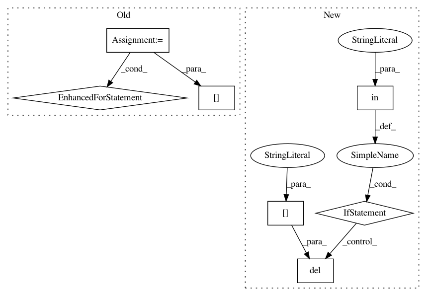

5798262e2f9d254f37cbe762f89747b7049a8acc,measurements/crinacle/crinacle_crawler.py,CrinacleCrawler,get_urls,#CrinacleCrawler#,94
Before Change
def get_urls(self):
// Link source is not a web page but raw_data folder
file_paths = dict()
for fp in glob(os.path.join(DIR_PATH, "raw_data", "*")):
name = os.path.split(fp)[1]
name = re.sub(r" [LR]\d*\.txt", "", name).replace(".txt", "")
name = re.sub(r" //\d$", "", name)
name = name.replace(".mdat", "")
if name not in file_paths:
file_paths[name] = []
file_paths[name].append(fp)
return file_paths
def process(self, item, file_paths):
fr = FrequencyResponse(name=item.true_name)
After Change
add_to(fp, "gras")
for name, rigs_and_file_paths in file_paths.items():
if (
"iem" in rigs_and_file_paths and
("legacy" in rigs_and_file_paths or "gras" in rigs_and_file_paths)
):
// Remove IEM rig measurements if Ears-711 or GRAS measurements exist
// This means the headphone is onear model and the files found in IEM folder are duplicates
del rigs_and_file_paths["iem"]
return file_paths
def process(self, item, file_paths, target_dir=None):
if target_dir is None:
In pattern: SUPERPATTERN
Frequency: 3
Non-data size: 7
Instances
Project Name: jaakkopasanen/AutoEq
Commit Name: 5798262e2f9d254f37cbe762f89747b7049a8acc
Time: 2020-10-18
Author: jaakko.o.pasanen@gmail.com
File Name: measurements/crinacle/crinacle_crawler.py
Class Name: CrinacleCrawler
Method Name: get_urls
Project Name: ContextLab/hypertools
Commit Name: 529c4bc269f6c3a265d49b97393cbc6ecbcf5f94
Time: 2016-12-22
Author: andrew.heusser@gmail.com
File Name: python/hypertools/plot/plot.py
Class Name:
Method Name: plot
Project Name: ContextLab/hypertools
Commit Name: 7c2673280add4356814a56e5a4253bd959630e95
Time: 2016-12-22
Author: andrew.heusser@gmail.com
File Name: python/hypertools/plot/plot.py
Class Name:
Method Name: plot